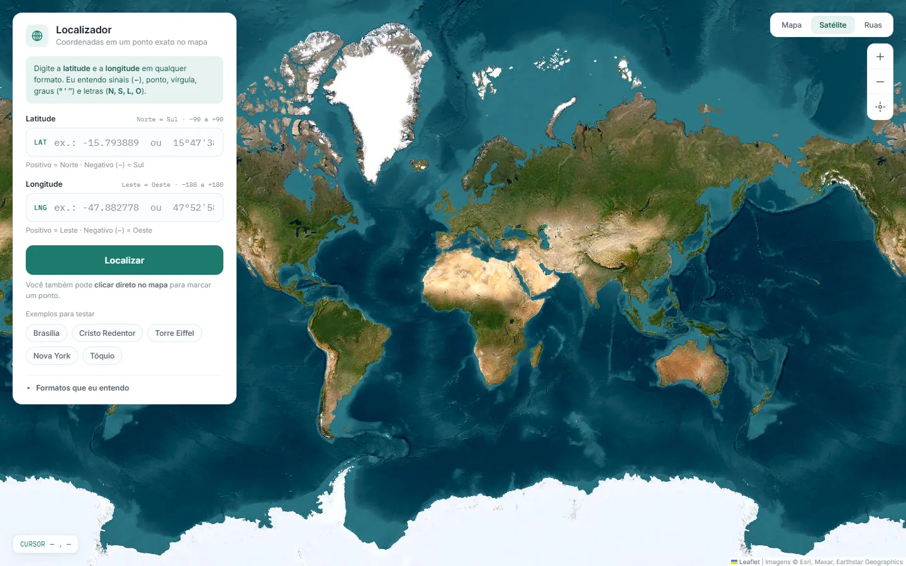
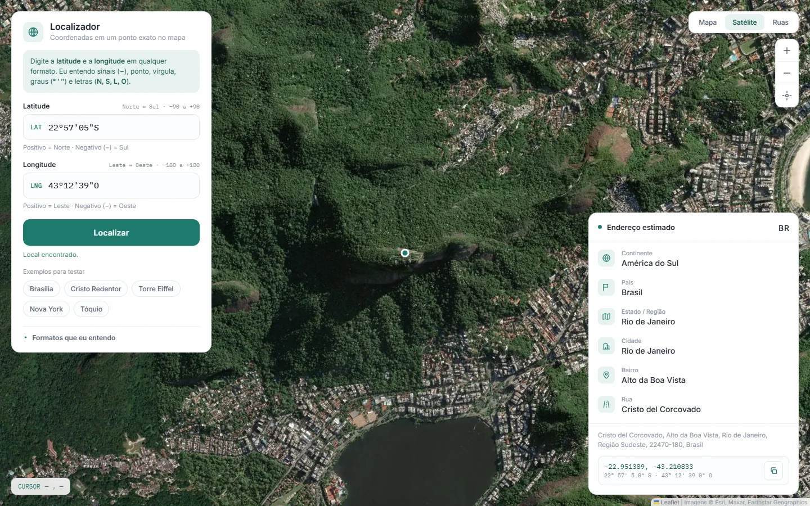
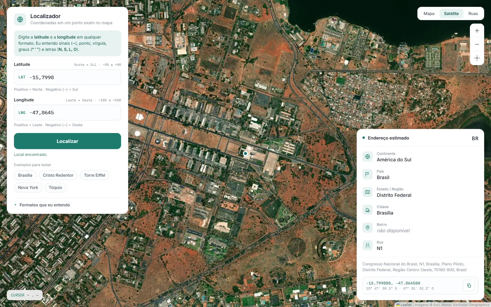
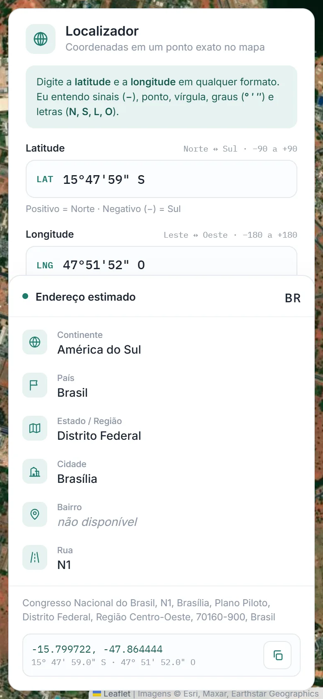

PortfólioTerritório e infraestrutura
Localizador por coordenadas
Página que recebe uma coordenada em formato decimal, em graus ou com N, S, L e O, e mostra o local no mapa com imagem de satélite e endereço. Um script acrescenta a localização a uma planilha Excel.
- Uso
- Público
- Mapa
- Leaflet com satélite
- Endereço
- Nominatim, OpenStreetMap
- Planilha
- Excel, sem alterar o original
Telas
Capturas da página publicada.






No celular


Fluxo da página
Entrada
Digitarlatitude e longitude
Colar o parno campo da latitude
Clicar no mapamarca o ponto
Exemplos5 locais prontos
Leitura
Formatodecimal, vírgula, graus ou letras
Faixalatitude de -90 a +90, longitude de -180 a +180
Resultado
Mapamarcador e aproximação
Endereçocontinente, país, estado, cidade, bairro e rua
Copiarcoordenada em decimal e em graus
Formatos aceitos
- Decimal-15.793889 , -47.882778
- Vírgula decimal-15,793889
- Letras de direção15.7939 S , 47.8828 O
- Graus, minutos e segundos15°47'38"S 47°52'58"O
- Par colado-15.7939, -47.8828 no campo da latitude
Planilhas
Entrada
Planilha Exceluma ou várias, sem alterar o original
Leitura
Colunasacha latitude e longitude pelos dados, não pelo cabeçalho
Endereço
Nominatim1 consulta por segundo
Cachepontos a 11 m de distância usam a mesma consulta
Saída
Nova planilha7 colunas ao lado da longitude, no mesmo estilo
Linkabre o ponto no Google Maps
Colunas acrescentadas: continente, país, estado, cidade, bairro, rua e link.
Funcionalidades
- CamadasMapa, satélite e ruas.
- CursorCoordenada do ponteiro em tempo real.
- Minha localizaçãoCentraliza o mapa na posição do aparelho.
- Arquivo únicoPágina em um HTML, publicada no GitHub Pages.
Tecnologias
JavaScriptLeafletOpenStreetMapPythonopenpyxl